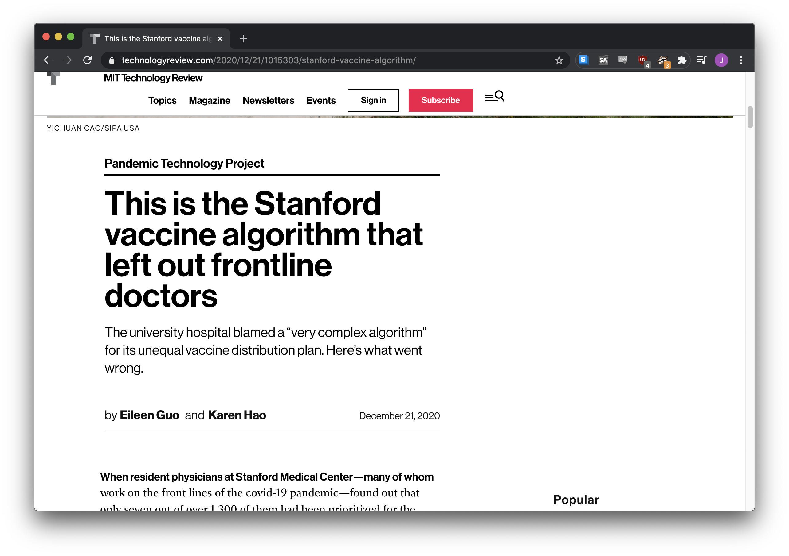
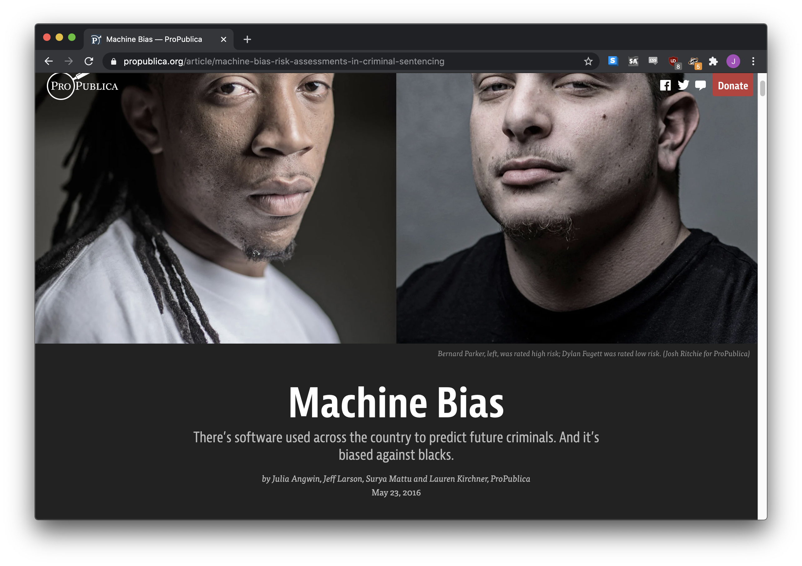
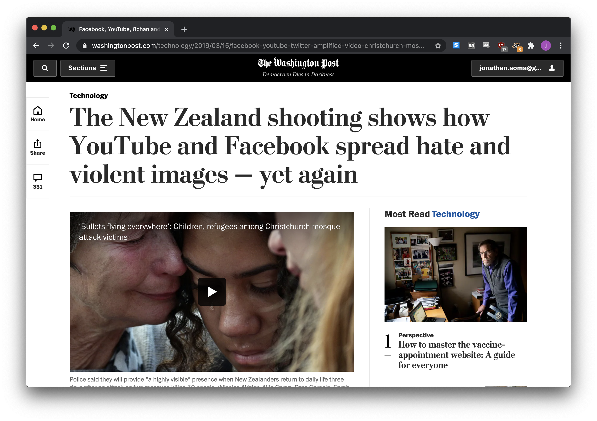

Who’s to blame for a bad vaccine rollout? Algorithms!Who’s to blame for a radicalization? Algorithms!
Who’s to blame for a racism? Algorithms!
“Persine is an automated tool to study and reverse-engineer algorithmic recommendation systems, like YouTube videos and Amazon products. It has a simple interface and encourages reproducible results.”
from persine import PersonaEngineengine = PersonaEngine()with engine.persona() as persona: persona.run_batch(["https://www.youtube.com/watch?v=hZw23sWlyG0","youtube:next_up#3","youtube:homepage" ]) persona.history.to_csv("history.csv") persona.recommendations.to_csv("recs.csv")
How well does YouTube police its content, and what kind of content is policed?
And Amazon, too!
Persine also works on Amazon, although it’s not as well tested, and Amazon’s website is kind of insane. You can see what’s surfaced in search results, what’s listed as recommendations on product pages or on the Amazon homepage.